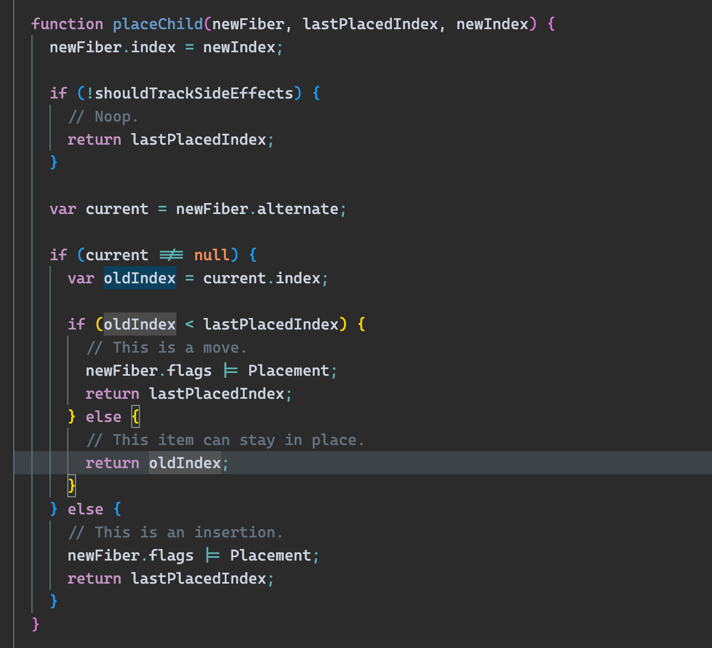

从源码分析diff算法
以下需要建立在对
react理念和react render阶段有一定理解的基础上
diff算法发生在beginWork函数中
满足current !== null时进行diff(为null时意味着本次是mount阶段)，mount阶段beginWork生成的子Fiber均被打上Placement的标记并存储在flags属性上(前几个版本存在effectTag上)
diff算法本质是将current树上的fiber与组件update后返回的jsx进行对比，生成打好flags的子Fiber节点
入口
以div举例，beginWork会根据 当前workInProgress的tag(即上一次beginWork生成好的子Fiber节点) 来判断更新的类型, div属于HostComponent将执行updateHostComponent

比较对象
以以下代码为例，workInProgress为下图红框时

由下图可以看出，调用reconcileChildren传入的nextChildren是当前workInProgress的 children, 以我们的例子来说就是div下的jsx
注意点：div下的jsx并非单一节点时，nextChildren为数组类型，因此diff算法可能是链表与数组间的比较

下图可知，比较对象是current.child与上面说的nextChildren的比较

diff流程
由下图可知，diff主要分为jsx返回的是单节点的diff和jsx返回的是多节点的diff
单节点中，至于其他的关于Portal、TextNode都比较好理解，简单概述一下
Portal的更新和单节点的diff算法很像如果是文本节点，则将
current.child的比较节点全部删除(原因是因为beginWork一次只生成一个child节点), 并基于此current.child重新克隆一个fiber节点

jsx返回的是单节点的diff
下图红框表示节点是更新的节点, 棕色框表示节点是新增的节点
红框意味着刚进来有值，说明当前
current.child处在同层级棕框意味着当前界面上的节点不存在，本次更新或者挂载的是一个全新的节点，因此要为当前全新的节点创建一个
fiber并返回

主要关注红框的部分, 核心逻辑如下
key不相同，把当前current.child(即当前current树上进行diff的节点)删除，将指针移到current.child的兄弟节点进行比较- 注意点：
key不相同不会把所有兄弟节点都删除，只会删除当前比较的，如果兄弟节点key相同还是会有复用的可能性
- 注意点：
key相同，比较elementType是否相同，如果相同，直接基于当前current.child创建一个fiber- 注意如果复用这个
fiber节点的child是和当前的current.child完全一样，可以减少渲染
- 注意如果复用这个
key相同，如果type不相同，要把current.child及其的兄弟节点一并删除
看如下代码，React不会复用更新前的div，而是把两个全都删了，重新创建
1 | // 更新前 |

jsx返回的是多节点的diff(Array, Iterator)
第一轮遍历
终止条件
oldFiber遍历完或者newChildren遍历完或者说当前diff的两个节点key不相同如果
key相同，继续判断，调用updateElement，方法比较简单- 如果
type不相同那么不能复用，这个时候会基于当前的newFiber创建fiber, 并将当前的oldFiber删除，继续遍历 - 如果
type相同，那么可以复用
- 如果

第二轮遍历
第二轮遍历是会带着第一轮遍历的结果去进行遍历，结果有以下情况：
下图先解释比较容易得两种情况：
newIdx === newChildren.length意味着新节点遍历完，那么直接把剩余没遍历的oldFiber删掉即可oldFiber === null意味着旧的节点遍历完了，那么遍历剩余的新节点依次创建Fiber即可

下图解释最复杂的情况，能进下图的位置说明newChildren和oldFiber都没遍历完
mapRemainingChildren这个方法是为了在O(1)复杂度快速找到对应的current节点，因此把key或者索引index作为key，current节点作为value存在map中遍历剩下的
newFiber，先找key一样的，没有key就找同位置的，为了找到移动的节点，调用updateElement——能复用就复用，不能复用就自己创建

lastPlacedIndex详细解释(精髓)
lastPlacedIndex这个索引解释——新创建的Fiber节点在dom中要插入的位置
如果当前节点没有被复用，是
全新创建的话，那么这个值不变，并打上Placement如果当前节点被复用了，这个值是返回
Max{oldIndex, lastPlacedIndex}如果这个节点被复用了，
oldIndex < lastPlacedIndex需要移动

多节点diff总结
第一次遍历用新旧同层判断key是否相同，不相同跳出，遍历完跳出
第二次遍历
2.1
oldFiber遍历完，创建新节点。newChildren遍历完删除多的oldFiber2.2 两个都没遍历完，将剩余的
oldFiber存成map。遍历newChildren，如果可以找到可以复用，判断oldIndex < lastPlacedIndex，标记Placement。并将lastPlacedIndex设置为oldFiber里当前遍历到的！！！最后一个可复用的节点